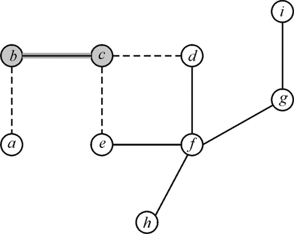
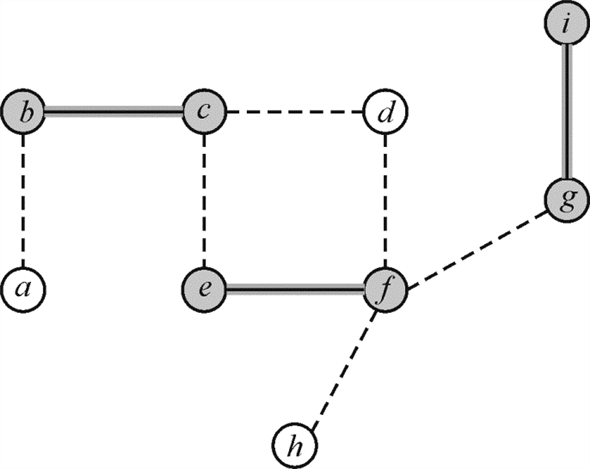

Algorithm of vertex cover problem: The vertex cover problem is the problem of finding the subset of vertices that cover all the edges of the graph.
Refer chapter 35, section 35.1 for the
APPROX-VERTEX-COVER algorithm.
algorithm.
The APPROX-VERTEX-COVER algorithm performs the following steps:
• Initializes the vertex set with an empty set.
• After that, copies edge set to a temporary variable.
• Then it selects each edge of the graph one by one and adds the vertices that cover to the vertex cover set. It updates the set by adding vertices to it.
• After that it removes the edge from the edge set.
• This process is repeated till the time the edge set is empty and all the edges in the graph are covered.
• At the end of the algorithm, it returns the vertex cover.
Example of a graph for which the algorithm always yields a suboptimal solution:
Consider a graph with two vertices and an edge between them.
The vertex cover consists of a single vertex, which is the optimal vertex cover.
The APPROX-VERTEX-COVER algorithm
returns both vertices in this case.
The following is the graph G:
The above graph with two vertices and one edge is the example
for which the algorithm APPROX-VERTEX-COVER
always yields a suboptimal solution.
The following is the graph G is another example:
The above graph has three vertices and two edges.
The algorithm APPROX-VERTEX-COVERreturns all
the three edges. So, the algorithm always yields a suboptimal
solution.
For an undirected graph, the vertex cover is defined as the collection of vertices that can cover all of the edges of the concerned graph.
Consider the graph  and the set
.
and the set
.
 is called the vertex cover, if it covers all the edges and
.
is called the vertex cover, if it covers all the edges and
.
The number of vertices in the set is called
the size of the vertex cover.
Maximal matching:
A matching M is said to be maximum matching of a graph G, if M is not properly contained in any other matching, that is where is any other matching of graph G.
Algorithm of vertex cover problem: The vertex cover problem is the problem of finding the subset of vertices that cover all the edges of the graph.
Refer chapter 35, section 35.1 for the
APPROX-VERTEX-COVER
algorithm.
The APPROX-VERTEX-COVER algorithm performs the following steps:
• Initializes the vertex set with an empty set.
• After that copies edge set to a temporary variable.
• Then, it selects each edge of the graph one by one and adds the vertices that cover to the vertex cover set. It updates the set by adding vertices to it.
• After that it removes the edge from the edge set.
• This process is repeated till the time the edge set is empty and all the edges in the graph are covered.
• At the end of the algorithm, it returns the vertex cover.
The line 4 of the algorithm APPROX-VERTEX-COVER, pick an
edge.
Once edge is selected, all the edges that are incident on any of the nodes to the edges are removed in the line 6. The rest of the edges that remain will form the maximum matching M in the graph G.
The process is repeated till the vertex cover is formed. The edges that remained after all the iterations form the maximum matching M in the graph G.
Therefore, the line 4 of the algorithm
APPROX-VERTEX-COVER
forms the maximum matching M in the
graph G .
Consider the graph given below:
In the graph there are 7 vertices in the vertex set and 8 edges named.
Consider the algorithm above for covering the edges. The following diagrams represent the state of the graph iteration by iteration of the algorithm.
Whenever an edge is chosen and the attached vertices are traversed; remaining of the edges connected to those vertices are removed from the sub-graph. This is done because the vertices attached to those edges have been covered already.
1. First the edgeis chosen
and the vertices b and c are added to the set of
vertex cover C. That is the updated set is. The edges
incident on added vertices b and c that is and
are
removed from the graph as shown by the dotted lines:
and
are
removed from the graph as shown by the dotted lines:

3. In the next iteration, the edge is selected from the remaining edge set. The updated vertex cover set is. As the entire edges incident on the vertices g and i are already removed from the graph so no edges are removed in this step.

Now, the cover set C contains six vertices and the sub-optimal vertex cover contains only four vertices.
Hence, the vertex cover for the graph is the graph
showing vertex cover is as follows:

Explanation:
The APPROX-VERTEX-COVER algorithm chooses a random edge and then deletes the edges incident init.
This process is continued till all the vertices are covered.
Firstly edge is chosen
(Figure-2), then and
edges are removed from the graph.
Next Edge is chosen and edgeand are discarded.
Lastly the edge is selected. After that no edge remains to be discarded.
So, the vertex cover set is.
From the above steps, it can be observed that the line 4 of the algorithm forms maximal matching. The edges picked up in line 4 are,and.
Vertex Cover Problem
The vertex cover problem is the problem in which we try to find out a set of vertices S from an undirected graph G, so that every edge of graph G has minimum one of its endpoint in S. Vertex cover problem is a NP-hard problem.
Heuristic technique refers to the techniques developed on some personal learning and self experience to find out or discover a new method. This technique if implemented tends to shorten the time period of solving a problem.Now, we have to show in our solution that whatever heuristic Professor has applied, it will not have approximation ratio of 2. The following graph will not give approximation ratio of 2 using the proposed heuristic given by Professor. The vertices of graph are:
And the adjacency list representation is:
There should be an edge from to and from to and so on.
The heuristic proposed is an approximation algorithm. For the upper bound the algorithm is greedy set cover algorithm, where edges are the path to be traced and every node depicts a set comprising of edges incident to this node, and greedy set cover have approximation time. For the lower bound take the bipartite graph constructed as following. Consider and.
Connect all to
for each. Then add
nodes to  and each of
them to exactly two nodes of, not
connected to any other of the added nodes. Now add nodes and
continue adding nodes like this. At last contains
nodes and contains
nodes.
and each of
them to exactly two nodes of, not
connected to any other of the added nodes. Now add nodes and
continue adding nodes like this. At last contains
nodes and contains
nodes.
Now, it is clear that is the
optimal vertex cover, but algorithm will select. Therefore,
we have lower bound of as
approximation factor. Thus it is seen that we are not getting
approximation factor of 2 anywhere. Hence, the heuristic proposed
by Professor proves to be wrong.
Optimal vertex-cover:
Vertex-cover of a graph G= (V, E) is a subset V' of the set of vertices V such that each edge of the graph is incident to at least one vertex of V'. The vertex-cover problem finds the optimal (minimum size) vertex-cover of a given graph.
The algorithm APPROX-VERTEX-COVER (G) finds the vertex cover of a given graph G. but it is not an optimal vertex-cover.
The following is the greedy algorithm to find an optimal vertex cover of a given tree.
OPTIMAL-VERTEX-COVER (T)
//initially store all node of tree into set
1. = all the nodes of tree T
2.  = all the
edges of the tree T
= all the
edges of the tree T
// initialize variable C to store the vertex cover
3. C=NIL
//Exit from the loop, if is empty
4. While != NIL
5. Select a node v such that v has at least one leaf
//Update the vertex covers C by adding v to C
6.
7. Update by removing the v and all the vertices incident to v from .
//finally returns the vertex cover
8. return C
• The above OPTIMAL-VERTEX-COVER algorithm returns an optimal vertex-cover C for a given tree T. in the line 1,2, two sets are initialized. One set is the set of vertices in the tree T. another is the set of edges in the tree T
• Initially the set C contains no vertex.
• In the line 4, while loop checks whether the set of vertices is empty or not.
• If the set is not empty, then a vertex v that has at least one leaf is selected in the line 5 and the vertex v is added in the line 6.
• Now the vertex and it’s all neighboring nodes are removed from the set .
• Step 4 to 7 are repeated, until all the vertices are removed form the set .
Time complexity:
The above OPTIMAL-VERTEX-COVER selects the node v in each iteration optimally in O(n). That is, the algorithm runs linearly.
Hence the time complexity of algorithm will be .
Refer theorem 34.12 (vertex-cover problem is NP–complete) given in the chapter 34, section 34.5.2 of the textbook.
Refer theorem 34.11 (clique problem is NP–complete) given in the chapter 34, section 34.5.1 of the textbook.
• The vertex-cover problem finds the vertex cover of minimum size in a given graph.
• The clique problem finds a clique of maximum size in a given graph.
• The vertex cover  and also
the clique .
and also
the clique .
• The vertex-cover problem and the NP–Complete clique problem are complementary means if the compliment of a graph is considered, then the maximum-size clique in the complement graph is an optimal vertex cover of the graph.
• The clique problem and vertex cover problem are related to each other through a reduction.
• The relation between these two problems does not imply that there exists a constant ratio bound approximation algorithm.
• The reductions may alter the ratio by polynomial times.
Therefore, the reduction relationship between the vertex-cover problem and clique problem doesn’t imply that, for the clique problem, there exists a polynomial-time approximation algorithm with a constant approximation ratio.